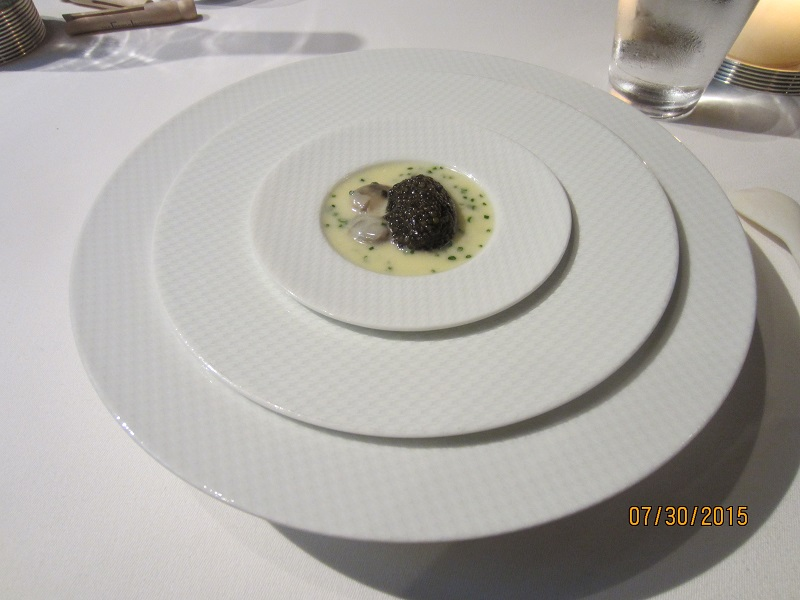
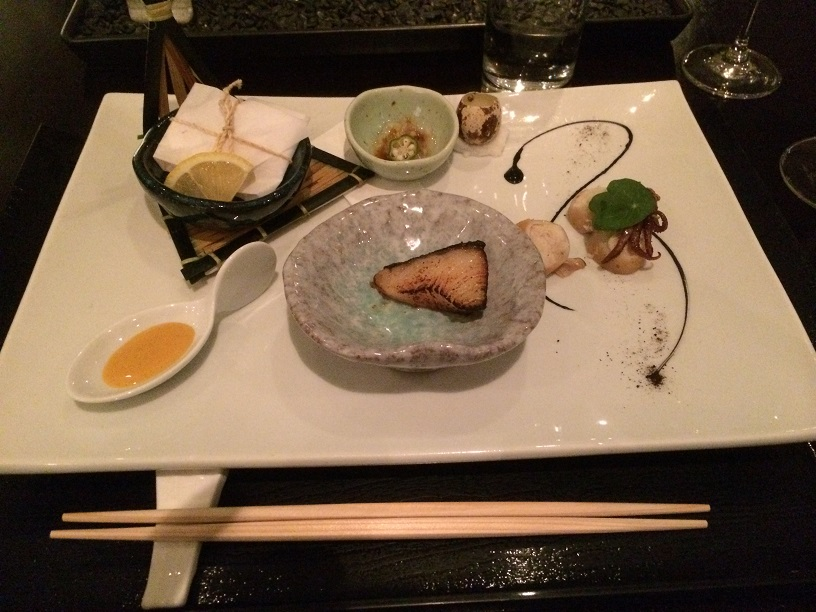
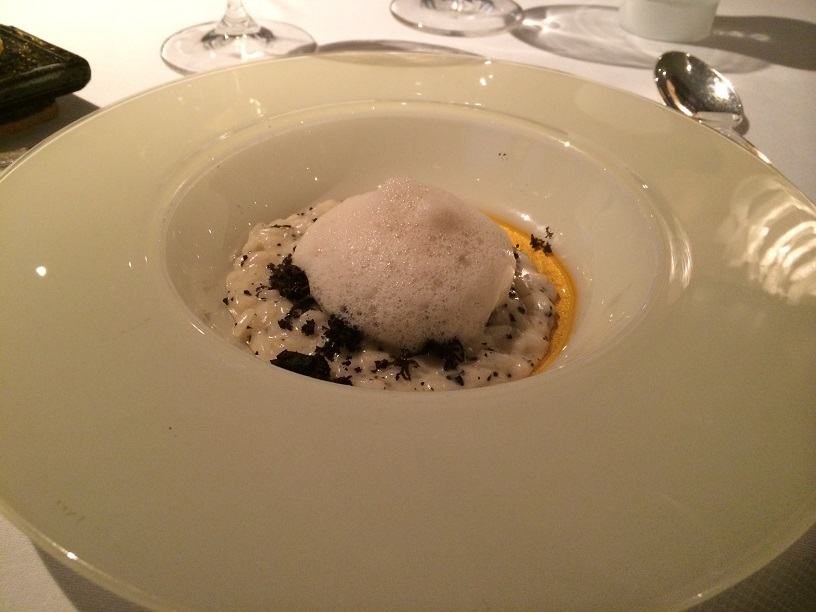
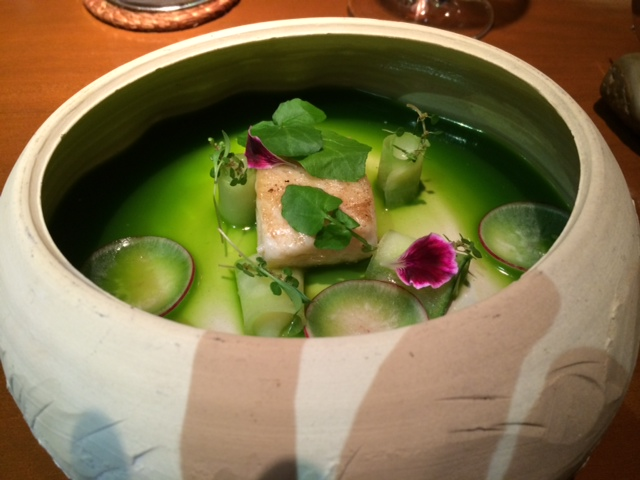

SuperMeals
SuperMeals
Restaurants that have — or should have — Michelin stars.
The French Laundry (Yountville, CA)
The only three-star Michelin restaurant in the western United States, and a bucket list item that we finally did in 2015.
Here is their signature starter: it is called Oysters and pearls. The base is a warm tapioca. On the left is the oyster, and the "pearls" are white sturgeon caviar. Absolutely sublime.
N/Naka (Santa Monica, CA)
We first saw this restaurant on the Netflix special "Chef's Table" about check Niki Nakayama, who definitely is both a culinary and visual artist with the food. Omakase dining at its finest, especially with the wine and sake pairing.
An appetizer course: top left is a paper-wrapped shrimp that you dip in the sauce at bottom left. At top is the jellyfish which, I have to admit, I was somewhat scared to try, but it had a delightful pepper flavor added. At bottom is a lovely black cod bite. On the right is the squid, which you dip in the quail egg stirred into the octopus ink.
Melisse (Santa Monica, CA)
We first went here on a getaway weekend to Santa Monica, and we were so impressed that we have already been back twice.
Truffle risotto with mascarpone cheese. An upgrade to the menu they call "The Ten", but worth it.
Ku'uk (Merida, Yucatan, Mexico)
This restaurant specialized in experimental textures based on traditional Mayan ingredients, and courses that were tributes to the Mayan heritage.
This is called the "Sacred Natural Well". An amazing white fish presented in chlorophyll juice, white cucumber, and citric clover. This is meant to represent a "cenote", the Mayan underground water wells in their cities. At your table, they add the "gift to the gods", which is a 24k gold-crusted pea (yes, you eat the gold as well).